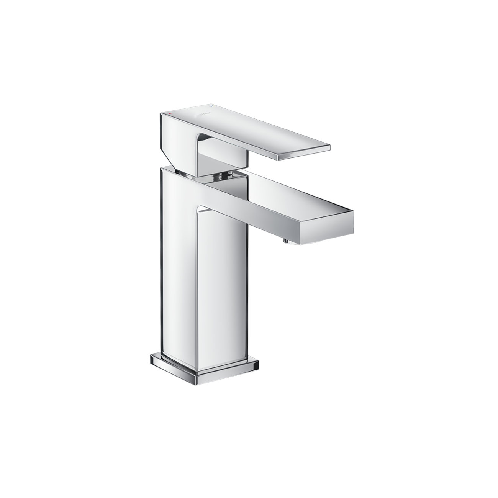
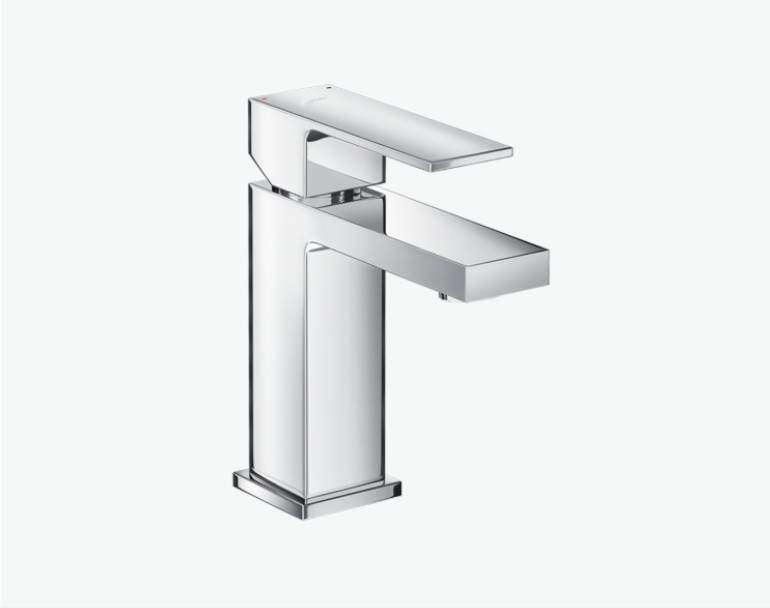
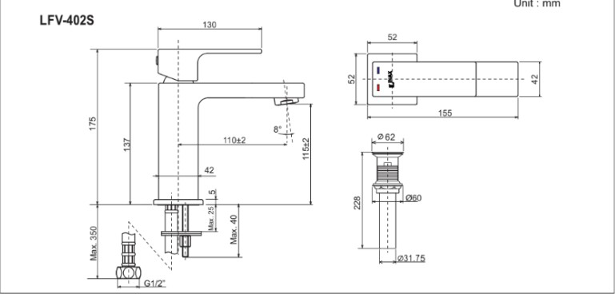

Sen vòi đơn LFV-402S là mẫu vòi nước nóng lạnh cao cấp được thiết kế dành riêng cho các mẫu chậu rửa lavabo. Sản phẩm mang phong cách hiện đại, tối giản với các đường nét vuông vức, mạnh mẽ, dễ dàng kết hợp với nhiều không gian phòng tắm từ cổ điển cho đến hiện đại.Thiết kế sen vòi đơn LFV-402S sang trọng và tinh tếKiểu dáng khối vuông vững chắc: Thân vòi hình khối chữ nhật tạo cảm giác vững chãi và sang trọng, thể hiện sự mạnh mẽ trong thiết kế.Tay gạt bản dẹt: Thiết kế hiện đại, giúp người dùng dễ dàng điều chỉnh lưu lượng và nhiệt độ nước chỉ bằng một thao tác gạt nhẹ nhàng.Bề mặt mạ Crom bóng: Bề mặt vòi lavabo được mạ Crom-Niken cao cấp, chống bám bẩn hiệu quả, dễ dàng lau chùi, luôn giữ được vẻ sáng bóng và phản chiếu ánh sáng tuyệt đẹp.Thiết kế thân vòi nguyên khối: Kết cấu chắc chắn, hạn chế tối đa rò rỉ nước và gia tăng độ bền vượt trội cho sản phẩm.Chất liệu cao cấpVật liệu chính của sen vòi đơn LFV-402S là đồng thau cao cấp được mạ một lớp Crom-Niken chất lượng cao và dày dặn. Lớp mạ này đạt tiêu chuẩn chống oxy hóa, đảm bảo độ bền và khả năng chống ăn mòn tuyệt đối, giúp sản phẩm giữ được màu sáng bóng lâu dài trong môi trường ẩm ướt của phòng tắm.Nhiều tính năng nổi bậtVan điều khiển CeramicSản phẩm được trang bị van Ceramic với độ bền cao, giúp kiểm soát dòng chảy và nhiệt độ nước một cách chính xác. Van sứ có khả năng chịu nhiệt và chịu áp lực tốt, đảm bảo vòi hoạt động trơn tru, không bị rò rỉ trong suốt quá trình sử dụng.Hoạt động ổn địnhVòi hoạt động tốt trong dải áp lực nước rộng: 0.05 - 0.75 MPaSản phẩm đã đạt các chứng nhận chất lượng quốc tế như ISO-9001 (Quản lý chất lượng) và ISO-14001 (Quản lý môi trường), khẳng định chất lượng vượt trội.Video giới thiệu vòi chậu INAXBản vẽ sen vòi đơn LFV-402SHướng dẫn lắp đặt LFV-402S: User manual_UM-0141(LFV-402S)_V2_25Sep2020.pdfThông số kỹ thuậtChất liệuĐồng thau mạ Crom-NikenLoạiVòi chậu nóng lạnhKích thước-Thiết kế- Tay gạt dẹt - Thân vòi nguyên khối, chống oxy hóaThương hiệuINAXTính năng- Van Ceramic với độ bền cao - Van sứ có khả năng chịu nhiệt và chịu áp lực tốt - Áp lực nước cao: 0.05 - 0.75 MPaMàu sắc-KhácHotline tư vấn và bảo hành: 18006633
Sen vòi đơn LFV-402S
Vòi chậu thương hiệu INAX.
Đã cập nhật danh sách yêu thích.
DANH MỤC: Vòi chậu
MÃ SẢN PHẨM: LFV-402S
DEPTH: mm
HEIGHT: mm
WIDTH: mm
Sen vòi đơn LFV-402S là mẫu vòi nước nóng lạnh cao cấp được thiết kế dành riêng cho các mẫu chậu rửa lavabo. Sản phẩm mang phong cách hiện đại, tối giản với các đường nét vuông vức, mạnh mẽ, dễ dàng kết hợp với nhiều không gian phòng tắm từ cổ điển cho đến hiện đại.Thiết kế sen vòi đơn LFV-402S sang trọng và tinh tếKiểu dáng khối vuông vững chắc: Thân vòi hình khối chữ nhật tạo cảm giác vững chãi và sang trọng, thể hiện sự mạnh mẽ trong thiết kế.Tay gạt bản dẹt: Thiết kế hiện đại, giúp người dùng dễ dàng điều chỉnh lưu lượng và nhiệt độ nước chỉ bằng một thao tác gạt nhẹ nhàng.Bề mặt mạ Crom bóng: Bề mặt vòi lavabo được mạ Crom-Niken cao cấp, chống bám bẩn hiệu quả, dễ dàng lau chùi, luôn giữ được vẻ sáng bóng và phản chiếu ánh sáng tuyệt đẹp.Thiết kế thân vòi nguyên khối: Kết cấu chắc chắn, hạn chế tối đa rò rỉ nước và gia tăng độ bền vượt trội cho sản phẩm.Chất liệu cao cấpVật liệu chính của sen vòi đơn LFV-402S là đồng thau cao cấp được mạ một lớp Crom-Niken chất lượng cao và dày dặn. Lớp mạ này đạt tiêu chuẩn chống oxy hóa, đảm bảo độ bền và khả năng chống ăn mòn tuyệt đối, giúp sản phẩm giữ được màu sáng bóng lâu dài trong môi trường ẩm ướt của phòng tắm.Nhiều tính năng nổi bậtVan điều khiển CeramicSản phẩm được trang bị van Ceramic với độ bền cao, giúp kiểm soát dòng chảy và nhiệt độ nước một cách chính xác. Van sứ có khả năng chịu nhiệt và chịu áp lực tốt, đảm bảo vòi hoạt động trơn tru, không bị rò rỉ trong suốt quá trình sử dụng.Hoạt động ổn địnhVòi hoạt động tốt trong dải áp lực nước rộng: 0.05 - 0.75 MPaSản phẩm đã đạt các chứng nhận chất lượng quốc tế như ISO-9001 (Quản lý chất lượng) và ISO-14001 (Quản lý môi trường), khẳng định chất lượng vượt trội.Video giới thiệu vòi chậu INAXBản vẽ sen vòi đơn LFV-402SHướng dẫn lắp đặt LFV-402S: User manual_UM-0141(LFV-402S)_V2_25Sep2020.pdfThông số kỹ thuậtChất liệuĐồng thau mạ Crom-NikenLoạiVòi chậu nóng lạnhKích thước-Thiết kế- Tay gạt dẹt - Thân vòi nguyên khối, chống oxy hóaThương hiệuINAXTính năng- Van Ceramic với độ bền cao - Van sứ có khả năng chịu nhiệt và chịu áp lực tốt - Áp lực nước cao: 0.05 - 0.75 MPaMàu sắc-KhácHotline tư vấn và bảo hành: 18006633
DANH MỤC: Vòi chậu
MÃ SẢN PHẨM: LFV-402S
DEPTH: mm
HEIGHT: mm
WIDTH: mm